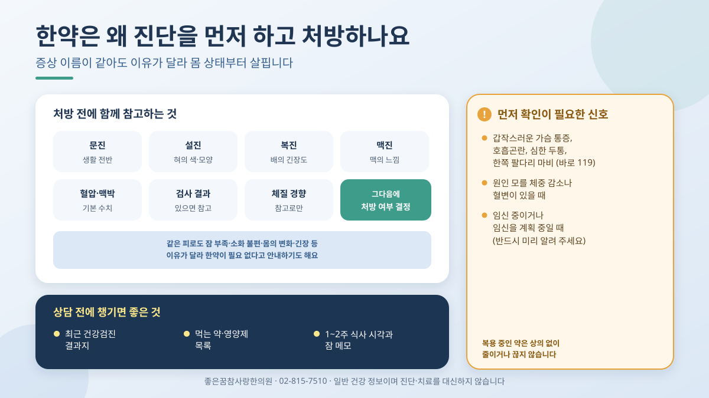
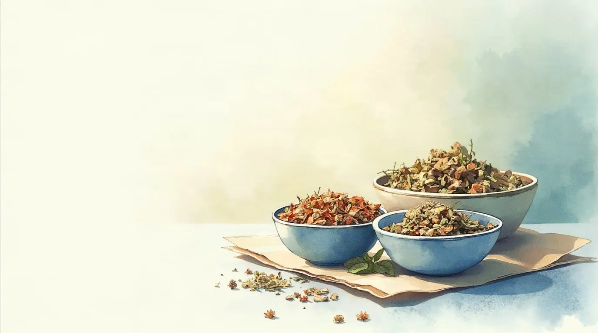
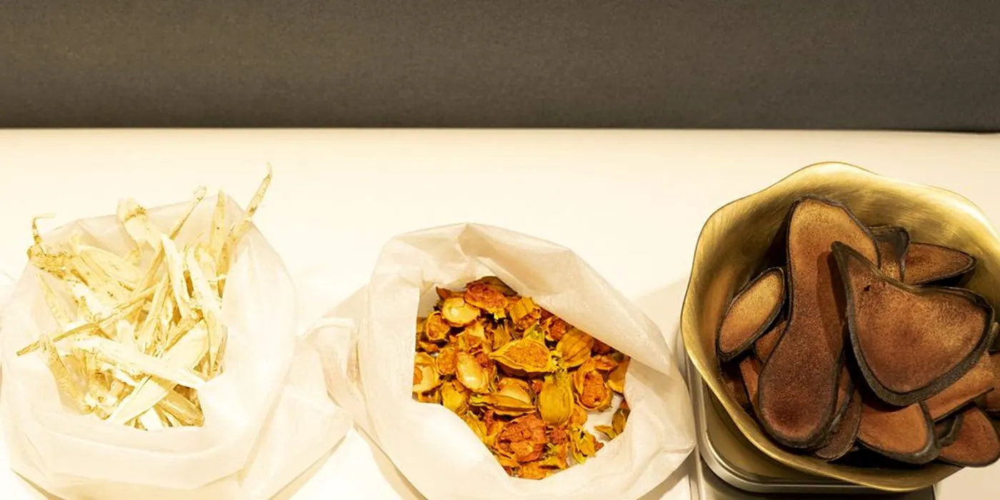

한약은 증상 이름만으로 정하지 않고 문진, 설진, 복진, 맥진과 혈압·맥박, 필요하면 검사 결과와 체질적 경향을 함께 참고해 처방 여부를 정합니다. 복용 뒤에도 변화를 살펴 필요하면 처방을 조정합니다.
여쭙는 것
- 불편이 언제부터, 어떤 때 심해지나요?
- 잠, 소화, 대소변, 식욕, 땀은 어떤가요?
- 여성은 생리 주기와 양에 변화가 있나요?
생활에서 해 볼 것
- 최근 건강검진 결과지를 챙기기
- 지금 먹는 약과 영양제 목록 만들기(약 목록 정리법)
- 불편한 증상을 날짜와 함께 메모하기(증상 기록 요령)
한의원에서 함께 살필 것
- 피로나 소화 불편이 오래 이어지는데 검사에서 큰 이상은 없다고 들은 경우
- 한약을 드셔 본 적이 있는데 맞는지 다시 확인하고 싶은 경우
- 양약을 드시는 중이라 함께 먹어도 되는지 궁금한 경우
먼저 확인이 필요한 신호
- 갑작스러운 가슴 통증, 호흡곤란, 심한 두통, 한쪽 팔다리 마비처럼 응급이 의심되는…
- 원인 모를 체중 감소나 혈변이 있는 경우
- 임신 중이거나 임신을 계획 중인 경우(반드시 미리 알려 주세요)

같은 "피곤하다"는 말도 사람마다 이유가 다릅니다. 그래서 한약은 약재부터 고르지 않고, 지금 몸 상태를 먼저 살펴본 뒤 처방할지, 어떤 처방이 맞을지를 정합니다. 진찰 결과 한약이 필요하지 않다고 안내하는 경우도 있습니다.
왜 같은 증상에도 진단이 먼저일까요
한약 상담을 찾게 되는 불편은 같은 이름이어도 뿌리가 다를 수 있습니다.
- 피로는 잠 부족, 소화 불편, 빈혈이나 갑상선 같은 몸의 변화, 오래 쌓인 긴장 등 이유가 여러 가지입니다.
- 소화 불편도 식사 시각과 양, 스트레스, 복용 중인 약에 따라 모습이 달라집니다.
- 손발이 찬 느낌도 활동량, 체중 변화, 혈액순환과 관련된 질환 등 원인이 다양합니다.
- 그래서 증상 이름만으로 처방을 정하면 맞지 않는 약을 드시게 될 수 있습니다.

먼저 이렇게 여쭙니다
- 불편이 언제부터, 어떤 때 심해지나요?
- 잠, 소화, 대소변, 식욕, 땀은 어떤가요?
- 여성은 생리 주기와 양에 변화가 있나요?
- 복용 중인 약과 영양제, 알레르기가 있나요?
한의원에서 참고하는 것
- 문진: 증상이 언제부터, 어떤 때 심해지는지와 생활 전반을 여쭙니다.
- 설진: 혀의 색, 모양, 설태를 봅니다. 자세한 내용은 설진 안내 글을 참고하세요.
- 복진: 배의 긴장도와 눌렀을 때의 반응을 확인합니다.
- 맥진: 맥이 뛰는 느낌을 손끝으로 살핍니다.
- 혈압·맥박: 기본 수치를 함께 봅니다.
- 검사 결과: 이미 받은 혈액·영상 검사 결과가 있으면 참고합니다.
- 체질적 경향: 한 가지로 단정하지 않고 참고 자료로만 씁니다.

일상에서 먼저 해 볼 수 있는 것
- 최근 건강검진 결과지를 챙기기
- 지금 먹는 약과 영양제 목록 만들기(약 목록 정리법)
- 불편한 증상을 날짜와 함께 메모하기(증상 기록 요령)
- 상담 전 1~2주 동안의 식사 시각과 잠을 짧게 적어 두기
한의원에서 함께 살필 수 있는 경우
- 피로나 소화 불편이 오래 이어지는데 검사에서 큰 이상은 없다고 들은 경우
- 한약을 드셔 본 적이 있는데 맞는지 다시 확인하고 싶은 경우
- 양약을 드시는 중이라 함께 먹어도 되는지 궁금한 경우
좋은꿈참사랑한의원에서는 먼저 불편한 점과 생활을 충분히 듣고, 진맥·설진·복진으로 몸 상태를 살핀 뒤 한약이 필요한지, 필요하다면 어떤 처방이 맞는지 정합니다. 한약은 원내에서 달이며 대표원장이 약재를 직접 검수합니다.

복용한 뒤에도 보는 이유
한약은 드시고 나서 몸이 어떻게 반응하는지가 중요합니다. 속이 편한지, 잠이 달라졌는지, 불편한 점은 없는지를 다음 진료에서 함께 이야기하며 필요하면 처방을 조정합니다.
이렇게 기록해 오시면 상담이 쉬워집니다
- 가장 불편한 증상 두세 가지와 시작된 시기
- 1~2주 동안의 잠, 식사, 대변 상태
- 복용 중인 약과 영양제 이름(약 봉투 사진도 좋습니다)
- 예전에 한약을 드시고 불편했던 경험

이런 증상은 먼저 확인이 필요합니다
- 갑작스러운 가슴 통증, 호흡곤란, 심한 두통, 한쪽 팔다리 마비처럼 응급이 의심되는 경우(바로 119)
- 원인 모를 체중 감소나 혈변이 있는 경우
- 임신 중이거나 임신을 계획 중인 경우(반드시 미리 알려 주세요)
복용 중인 약은 처방한 의사와 상의 없이 줄이거나 끊지 않습니다.
한눈에 보는 표
| 구분 | 핵심 |
|---|---|
| 여쭙는 것 | 불편이 언제부터, 어떤 때 심해지나요? 잠, 소화, 대소변, 식욕, 땀은 어떤가요? |
| 생활에서 해 볼 것 | 최근 건강검진 결과지를 챙기기 지금 먹는 약과 영양제 목록 만들기(약 목록 정리법) |
| 한의원에서 함께 살필 것 | 피로나 소화 불편이 오래 이어지는데 검사에서 큰 이상은 없다고 들은 경우 한약을 드셔 본 적이 있는데 맞는지 다시 확인하고 싶은 경우 |
| 먼저 확인이 필요한 신호 | 갑작스러운 가슴 통증, 호흡곤란, 심한 두통, 한쪽 팔다리 마비처럼 응급이 의심되는 경우(바로 119) 원인 모를 체중 감소나 혈변이 있는 경우 |
자주 묻는 질문
한약은 처음 와서 바로 지을 수 있나요?
문진과 진찰을 먼저 하고, 필요하다고 판단될 때 처방합니다. 진찰 결과에 따라 한약이 필요하지 않다고 안내할 수도 있습니다.
양약을 먹고 있어도 한약을 먹을 수 있나요?
복용 중인 약을 모두 알려 주세요. 함께 드셔도 되는지와 시간 간격을 살피며, 양약은 처방한 의사와 상의 없이 줄이거나 끊지 않습니다.
검사 결과가 없으면 진료받기 어렵나요?
아닙니다. 검사 결과는 참고 자료일 뿐이며 없어도 진료는 가능합니다.
이 글은 일반적인 건강 정보이며 개인의 진단이나 치료를 대신하지 않습니다. 증상이 있거나 복용 중인 약이 있다면 진료를 통해 확인하세요. 치료 효과는 개인마다 다를 수 있습니다.
작성 기준: 일반적으로 알려져 있는 건강 정보를 참고해 정리했습니다(대표원장 감수). 증상 기록은 1~2주 동안 하루 1회, 비슷한 시간에 적어 오시면 지난 상태와 비교하기 쉽습니다.
좋은꿈참사랑한의원은 재진 때 지난번 이야기부터 이어서 여쭙니다. 진료시간과 예약은 오시는 길에서 확인하세요.